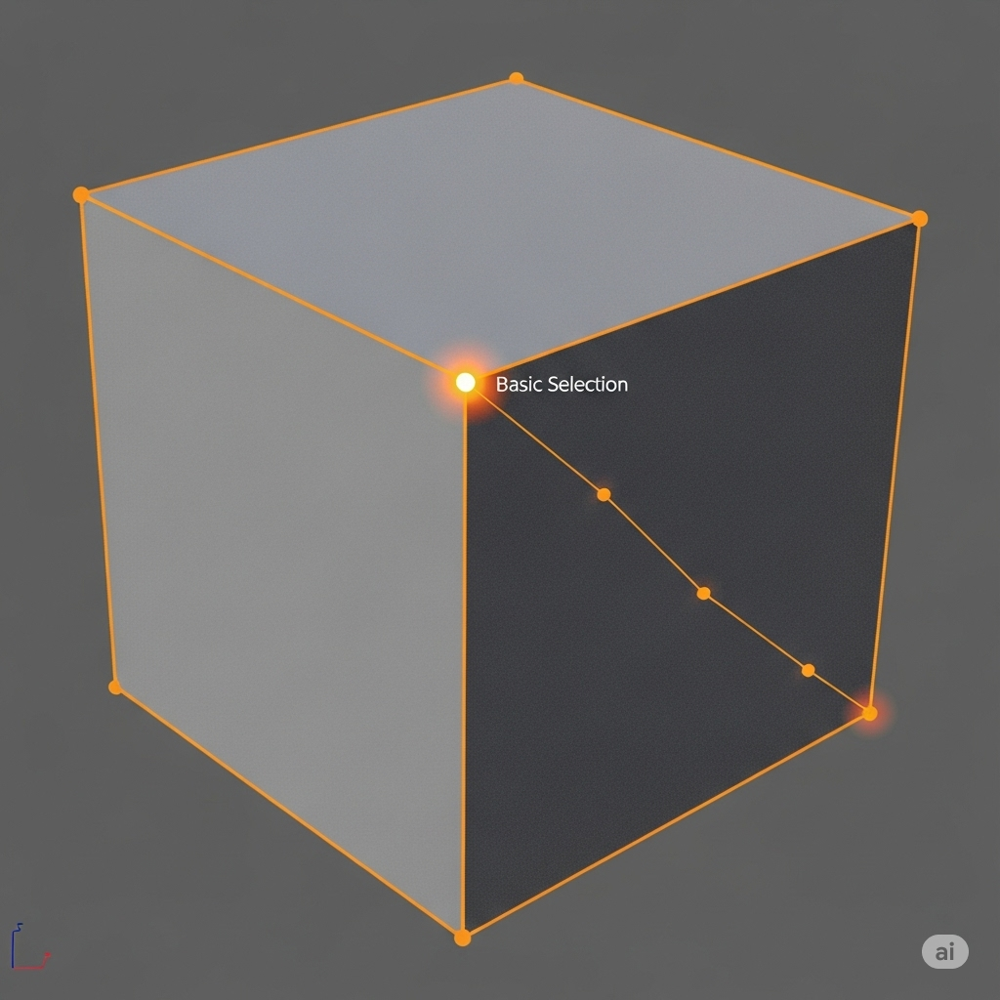
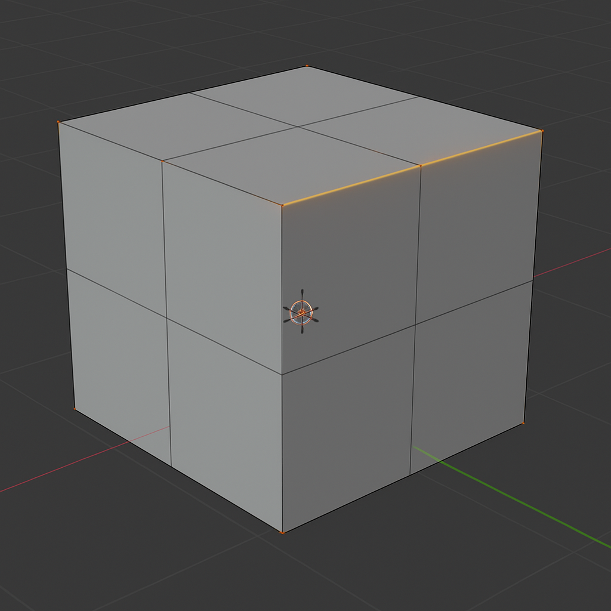
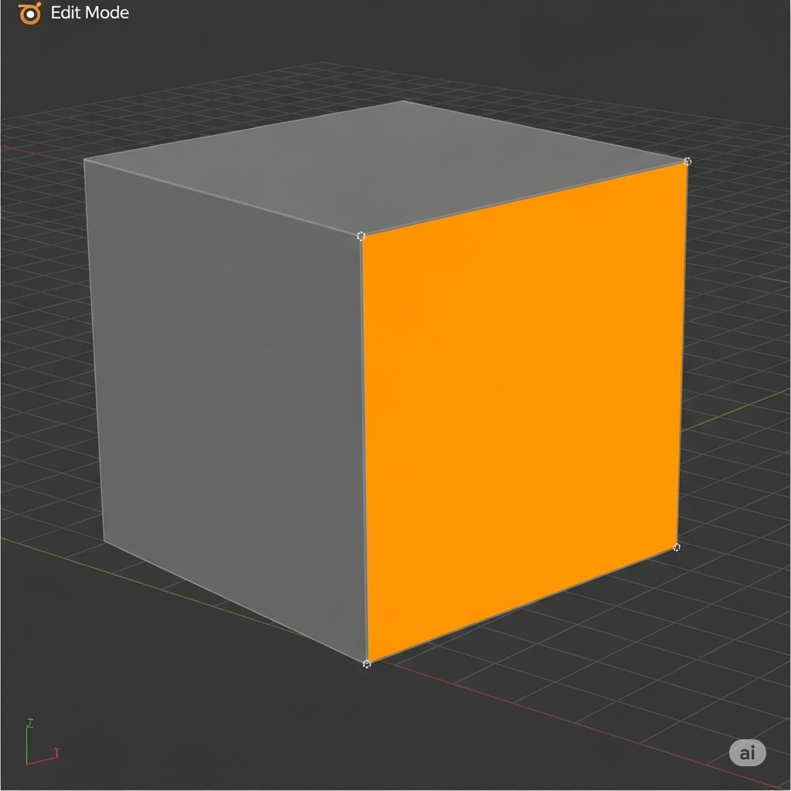
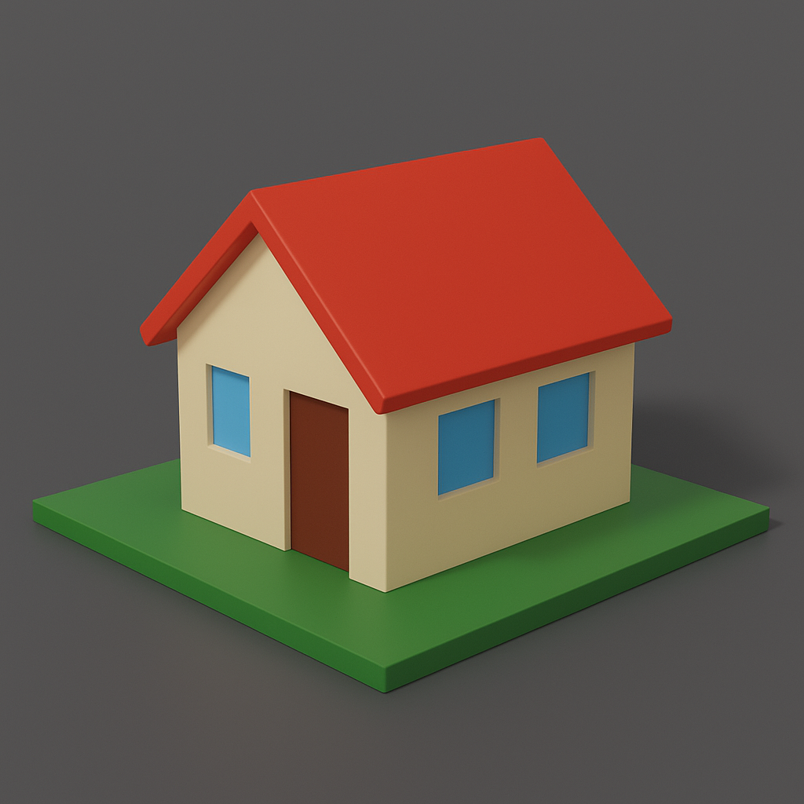

📌 УРОК 3: Редагування об’єктів
Режими роботи в Blender
Blender має кілька режимів роботи з об’єктами, але найважливіші для моделювання — це:
- Object Mode — режим, у якому працюємо з об’єктами як з цілим: переміщаємо, масштабовуємо, обертаємо, об’єднуємо, копіюємо тощо.
- Edit Mode — режим, у якому редагуємо внутрішню структуру об’єкта: вершини, ребра, грані.
Перехід між режимами: клавіша Tab.
Елементи меша
Об’єкти в Blender, такі як куб, сфера чи персонаж, складаються з меш-структур — основних складових 3D-моделі:
- Вершини (Vertices) — це точки в 3D-просторі. Вони визначають форму об’єкта.

- Ребра (Edges) — лінії, що з'єднують дві вершини. Формують "скелет" моделі.

- Грані (Faces) — площини, які утворюються між кількома ребрами (зазвичай 3 або 4). Саме вони створюють поверхню моделі.

Базові інструменти у режимі Edit Mode
У режимі редагування доступні спеціальні інструменти для зміни геометрії об’єкта:
- Select (LMB) — виділення об’єктів або елементів меша (вершин, ребер, граней) за допомогою лівої кнопки миші.
- Move (G) — переміщення вибраного елементу або групи елементів. Натискання клавіші G активує режим переміщення.
- Delete (X) — видалення виділених елементів. Після натискання клавіші X з’являється меню вибору, що саме видаляти (вершини, ребра, грані тощо).
- Fill (F) — заповнення простору гранню між вибраними вершинами або ребрами. Часто використовується для "закривання" отворів у моделі.
Навіщо потрібно редагування об’єктів?
Редагування об’єктів — ключовий етап у створенні будь-яких складних 3D-моделей. Воно дозволяє:
- Моделювати складні об’єкти — будинки, техніку, персонажів, меблі, декорації тощо.
- Оптимізувати геометрію — прибирати зайві елементи, покращувати топологію (структуру) моделі.
- Готувати модель до анімації — наприклад, для коректного згинання суглобів потрібна правильна сітка меша.
- Створювати індивідуальні форми з примітивів — кубів, сфер, циліндрів.
✅ Практична робота №3
Завдання: Створіть 2-3 різні будиночки для майбутнього міста. Усі окремі фігури виконуються у режимі Edit Mode з використанням лише базових інструментів.
Кожен будинок має містити:
- Прямокутну основу (куб).
- Дах (витягнута грань або окремий об’єкт).
- Вікна і двері (на даному етапі позначте кубами — потім ми будемо з їх допомогою формувати ці самі вікна і двері).
Порада: експериментуйте з різними висотами будинків і розміщенням елементів.
